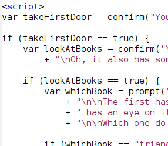
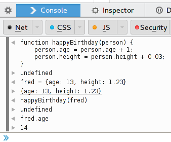
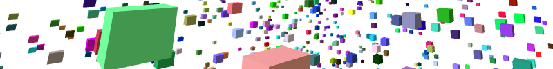

Our most recent adventure has been into the realm of text adventure games.
After learning the basics of JavaScript, writing games surely must be the next step. So we just did that.
Using three simple functions to tell players what happens to them, giving them choices and asking them questions we can already write small games, albeit without fancy graphics. (But you never know what's going to happen. :))
After a few hours, our adventures already have some characters in them, ask questions and check if you're good at math. (Or if you also like giraffes.)
If you'd like to write your own adventure, you can try as well.
Also know as: Making Time Machines.
To understand how variables, loops and functions work in JavaScript we wrote a series of small scripts that explain those concepts.
For example, at first we simply counted up, then down,
then we counted ages, not numbers, then we wrote the
happyBirthday function and then we almost
had our time machine.
You can try it for yourself.
Originally thought as a fun christmas surprise, we had a lot of fun with pixl.
In it we would use one simple function, draw_pixl,
to draw squares on the screen.
So, after playing around with it just before christmas, we went and drew all kinds of things: lots of lines, squares, diamonds, hearts and even some messages.
And as a nice addition all of this is collaborative. That is, everything you draw is seen by everyone else.
As always, the code and instructions are online and you're invited to try it out yourself.
(There's also a 3d version of it, but we didn't play with it much, yet.)
<canvas>Playing around with the HTML Canvas element as a first introduction to JavaScript and combined with the ability to draw stuff
There is a live version of it or you can play around with it yourself.
We're meeting every two weeks on tuesday, 19:00 at the sublab. Come join us. :)
We've got lots of things planned, some of them include: